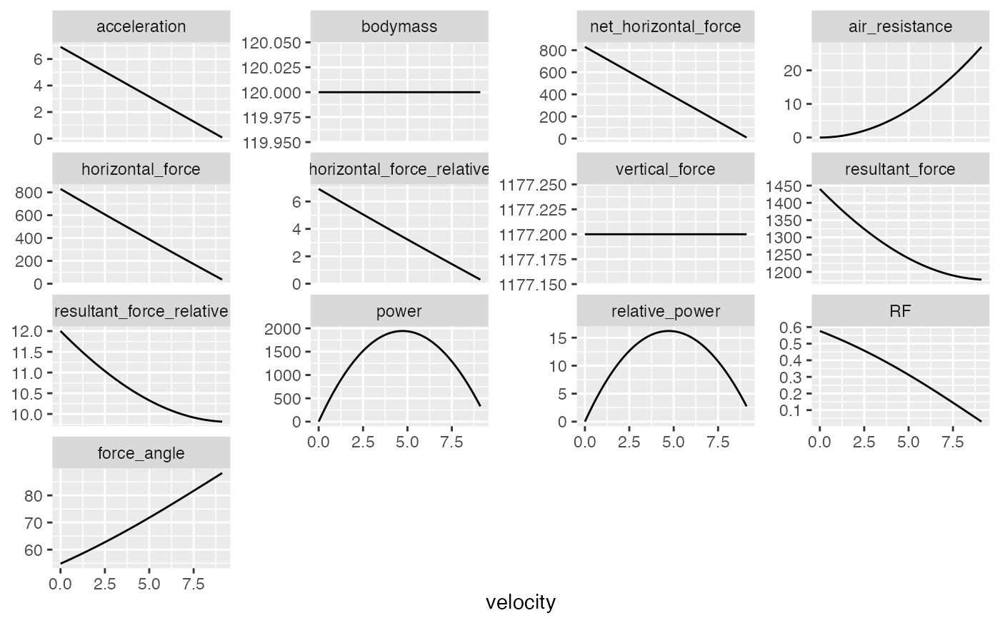
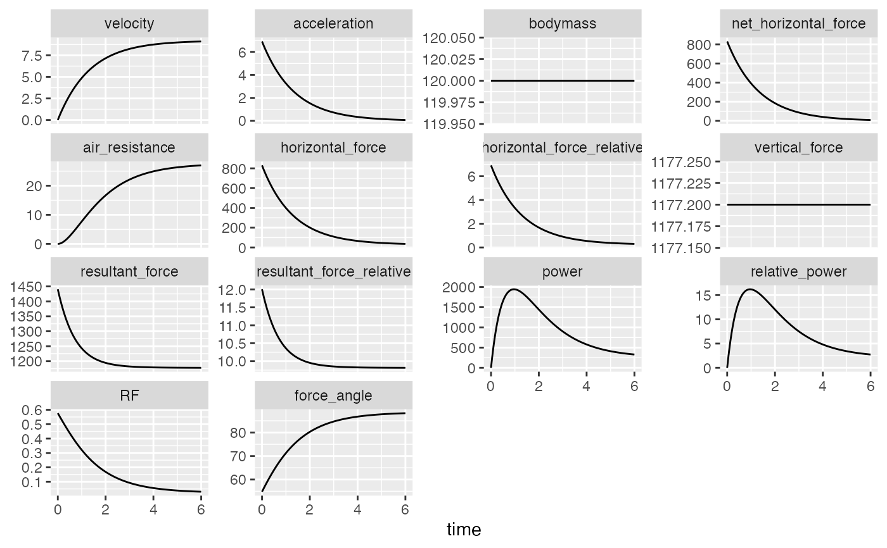

Provides Force-Velocity (FV) profile suggested by Pierre Samozino and JB-Morin, et al. (2016) and Pierre Samozino and Nicolas Peyror, et al (2021).
make_FV_profile(
MSS,
MAC,
bodymass = 75,
max_time = 6,
frequency = 100,
RFmax_cutoff = 0.3,
...
)Numeric vectors. Model parameters
Body mass in kg. Used to calculate relative power and forwarded to get_air_resistance
Predict from 0 to max_time. Default is 6seconds
Number of samples within one second. Default is 100Hz
Time cut-off used to estimate RFmax and Drf. Default is 0.3s
Forwarded to get_air_resistance for the purpose of calculation of air resistance and power
List containing the following elements:
Returned bodymass used in FV profiling
Horizontal force when velocity=0
F0 divided by bodymass
Velocity when horizontal force=0
Maximal horizontal power
Pmax divided by bodymass
Slope of the FV profile. See References for more info
Maximal force ratio after 0.3sec. See References for more info
Time cut-off used to estimate RFmax
Slope of Force Ratio (RF) and velocity. See References for more info
Residual standard error of the FV profile.
Residual standard error of the RF-velocity profile
Horizontal force when velocity=0, estimated using the analytics/polynomial method
F0_poly divided by bodymass
Velocity when horizontal force=0, estimated using the analytics/polynomial method
Maximal horizontal power, estimated using the analytics/polynomial method
Pmax_poly divided by bodymass
Slope of the FV profile, estimated using the analytics/polynomial method. See References for more info
Data frame containing simulated data used to estimate parameters
Samozino P, Rabita G, Dorel S, Slawinski J, Peyrot N, Saez de Villarreal E, Morin J-B. 2016. A simple method for measuring power, force, velocity properties, and mechanical effectiveness in sprint running: Simple method to compute sprint mechanics. Scandinavian Journal of Medicine & Science in Sports 26:648–658. DOI: 10.1111/sms.12490.
Samozino P, Peyrot N, Edouard P, Nagahara R, Jimenez‐Reyes P, Vanwanseele B, Morin J. 2022. Optimal mechanical force‐velocity profile for sprint acceleration performance. Scandinavian Journal of Medicine & Science in Sports 32:559–575. DOI: 10.1111/sms.14097.
data("jb_morin")
m1 <- model_radar_gun(time = jb_morin$time, velocity = jb_morin$velocity)
fv_profile <- make_FV_profile(
MSS = m1$parameters$MSS,
MAC = m1$parameters$MAC,
bodyheight = 1.72,
bodymass = 120
)
print(fv_profile)
#> Estimated Force-Velocity Profile
#> --------------------------------
#> bodymass F0 F0_rel V0 Pmax
#> 1.200000e+02 8.225498e+02 6.854581e+00 9.505432e+00 1.954673e+03
#> Pmax_rel FV_slope RFmax_cutoff RFmax Drf
#> 1.628894e+01 -7.211225e-01 3.000000e-01 4.909433e-01 -6.629983e-02
#> RSE_FV RSE_Drf F0_poly F0_poly_rel V0_poly
#> 1.748288e+00 4.951049e-03 8.299911e+02 6.916593e+00 9.534875e+00
#> Pmax_poly Pmax_poly_rel FV_slope_poly
#> 1.978465e+03 1.648721e+01 -7.253995e-01
plot(fv_profile)

plot(fv_profile, "time")
